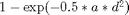
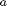
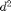
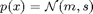
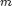
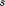

loss_unicycle.m
Robotic unicycle loss function. The loss is , where  is a (positive) constant and  is the squared difference between the current configuration of the unicycle and a target set point.
The mean and the variance of the loss are computed by averaging over the Gaussian distribution of the state  with mean  and covariance matrix , plus cost.expl times the standard deviation of the loss (averaged wrt the same Gaussian), where the exploration paramater cost.expl defaults to zero.
Negative values of the exploration parameter are used to encourage exploration and positive values avoid regions of uncertainty in the policy. Derivatives are computed when desired.
The mean and the variance of the loss are computed by averaging over the Gaussian distribution of the state with mean and covariance matrix . Derivatives of these quantities are computed when desired.
function [L, dLdm, dLds, S2] = loss_unicycle(cost, m, s)
Input arguments:
cost cost structure .p parameters: [radius of wheel, length of rod] [2 x 1 ] .width array of widths of the cost (summed together) .expl (optional) exploration parameter; default: 0 m mean of state distribution [D x 1 ] s covariance matrix for the state distribution [D x D ]
Output arguments:
L expected cost [1 x 1 ] dLdm derivative of expected cost wrt. state mean vector [1 x D ] dLds derivative of expected cost wrt. state covariance matrix [1 x D^2] S2 variance of cost [1 x 1 ]
Copyright (C) 2008-2013 by Marc Deisenroth, Andrew McHutchon, Joe Hall, and Carl Edward Rasmussen.
Last modified: 2013-03-26
Contents
High-Level Steps
- Precomputations
- Define static penalty as distance from target setpoint
- Trigonometric augmentation
- Calculate loss
function [L, dLdm, dLds, S2] = loss_unicycle(cost, m, s)
Code
rw = cost.p(1); r = cost.p(2); if isfield(cost,'width'); cw = cost.width; else cw = 1; end if ~isfield(cost,'expl') || isempty(cost.expl); b = 0; else b = cost.expl; end I6 = 8; I9 = 10; % coordinates of theta and psi Ixc = 6; Iyc = 7; % coordinates of xc and yc % 1. Some precomputations D = size(s,2); % state dimension D0 = D + 2; % state dimension (augmented with I6-I9 and I6+I9) D1 = D0 + 8; % state dimension (with sin/cos) L = 0; dLdm = zeros(1,D); dLds = zeros(1,D*D); S2 = 0; P = [eye(D); zeros(2,D)]; P(D+1:end,I6) = [1;-1]; P(D+1:end,I9) = [1;1]; M = zeros(D1,1); M(1:D0) = P*m; S = zeros(D1); S(1:D0,1:D0) = P*s*P'; Mdm = [P; zeros(D1-D0,D)]; Sdm = zeros(D1*D1,D); Mds = zeros(D1,D*D); Sds = kron(Mdm,Mdm); % 2. Define static penalty as distance from target setpoint Q = zeros(D+10); C1 = [rw r/2 r/2]; Q([D+4 D+6 D+8],[D+4 D+6 D+8]) = 8*(C1'*C1); % dz C2 = [1 -r]; Q([Ixc D+9],[Ixc D+9]) = 0.5*(C2'*C2); % dx C3 = [1 -(r+rw)]; Q([Iyc D+3],[Iyc D+3]) = 0.5*(C3'*C3); % dy Q(9,9) = (1/(4*pi))^2; % yaw angle loss target = zeros(D1,1); target([D+4 D+6 D+8 D+10]) = 1; % target setpoint % 3. Trigonometric augmentation i = 1:D0; k = D0+1:D1; [M(k) S(k,k) C mdm sdm Cdm mds sds Cds] = ... gTrig(M(i),S(i,i),[I6 D+1 D+2 I9]); [S Mdm Mds Sdm Sds] = ... fillIn(S,C,mdm,sdm,Cdm,mds,sds,Cds,Mdm,Sdm,Mds,Sds,i,k,D1); % 4. Calculate loss for i = 1:length(cw) % scale mixture of immediate costs cost.z = target; cost.W = Q/cw(i)^2; [r rdM rdS s2 s2dM s2dS] = lossSat(cost, M, S); L = L + r; S2 = S2 + s2; dLdm = dLdm + rdM(:)'*Mdm + rdS(:)'*Sdm; dLds = dLds + rdM(:)'*Mds + rdS(:)'*Sds; if (b~=0 || ~isempty(b)) && abs(s2)>1e-12 L = L + b*sqrt(s2); dLdm = dLdm + b/sqrt(s2) * ( s2dM(:)'*Mdm + s2dS(:)'*Sdm )/2; dLds = dLds + b/sqrt(s2) * ( s2dM(:)'*Mds + s2dS(:)'*Sds )/2; end end % normalize n = length(cw); L = L/n; dLdm = dLdm/n; dLds = dLds/n; S2 = S2/n; % Fill in covariance matrix...and derivatives ----------------------------
function [S Mdm Mds Sdm Sds] = ... fillIn(S,C,mdm,sdm,Cdm,mds,sds,Cds,Mdm,Sdm,Mds,Sds,i,k,D) X = reshape(1:D*D,[D D]); XT = X'; % vectorized indices I=0*X; I(i,i)=1; ii=X(I==1)'; I=0*X; I(k,k)=1; kk=X(I==1)'; I=0*X; I(i,k)=1; ik=X(I==1)'; ki=XT(I==1)'; Mdm(k,:) = mdm*Mdm(i,:) + mds*Sdm(ii,:); % chainrule Mds(k,:) = mdm*Mds(i,:) + mds*Sds(ii,:); Sdm(kk,:) = sdm*Mdm(i,:) + sds*Sdm(ii,:); Sds(kk,:) = sdm*Mds(i,:) + sds*Sds(ii,:); dCdm = Cdm*Mdm(i,:) + Cds*Sdm(ii,:); dCds = Cdm*Mds(i,:) + Cds*Sds(ii,:); S(i,k) = S(i,i)*C; S(k,i) = S(i,k)'; % off-diagonal SS = kron(eye(length(k)),S(i,i)); CC = kron(C',eye(length(i))); Sdm(ik,:) = SS*dCdm + CC*Sdm(ii,:); Sdm(ki,:) = Sdm(ik,:); Sds(ik,:) = SS*dCds + CC*Sds(ii,:); Sds(ki,:) = Sds(ik,:);